Paperion
The only academic tool you need !
All the papers ever published,
Content-based recommendations,
AI summaries ... and it's Open Source.
All the papers ever published,
Content-based recommendations,
AI summaries ... and it's Open Source.
77742108
Papers
48840
Magazines
10612
Publishers
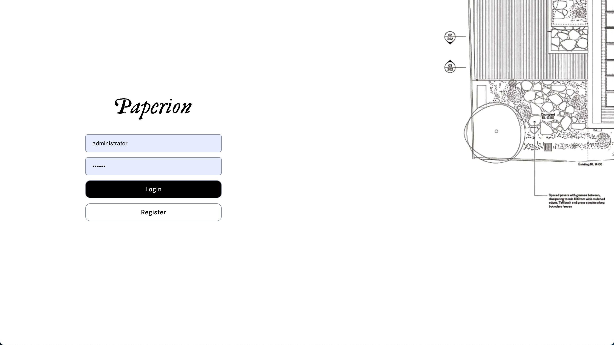
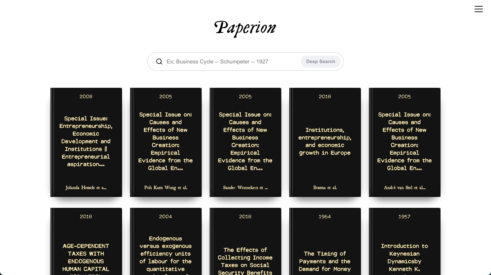
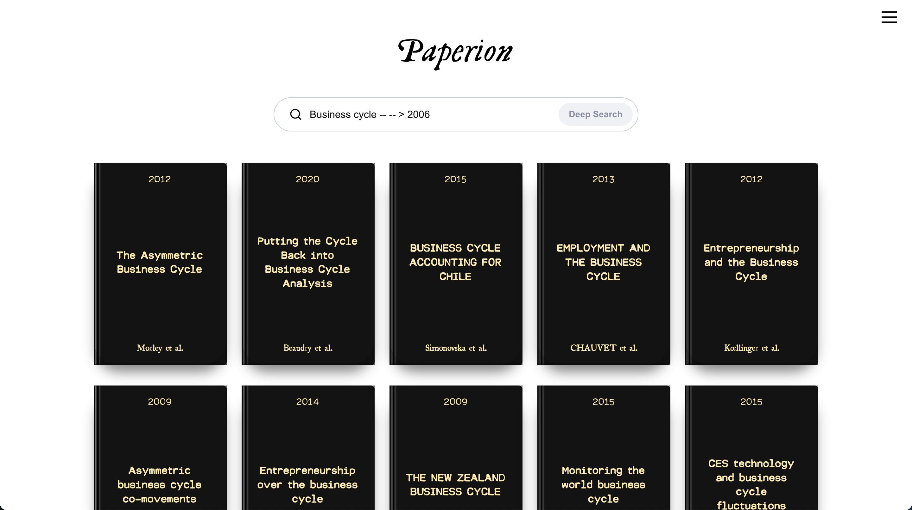
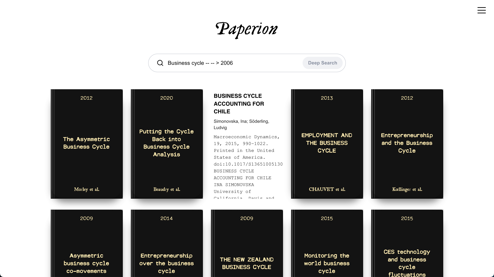
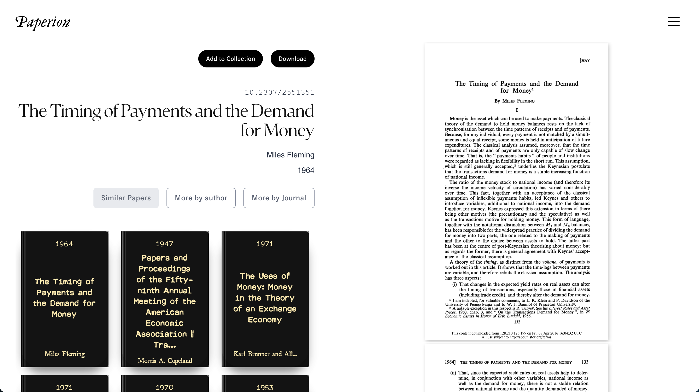
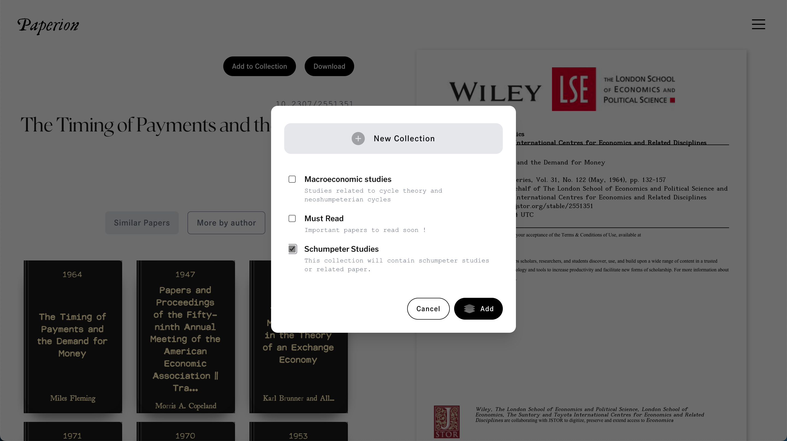
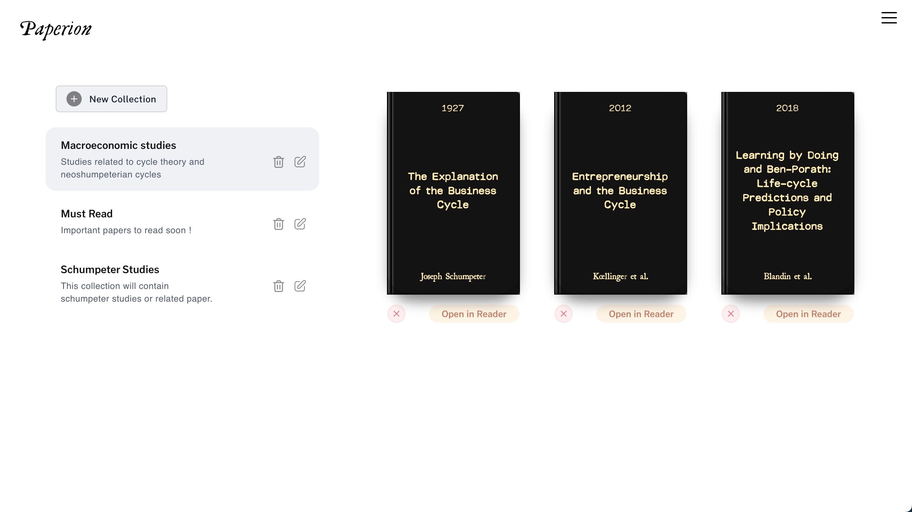
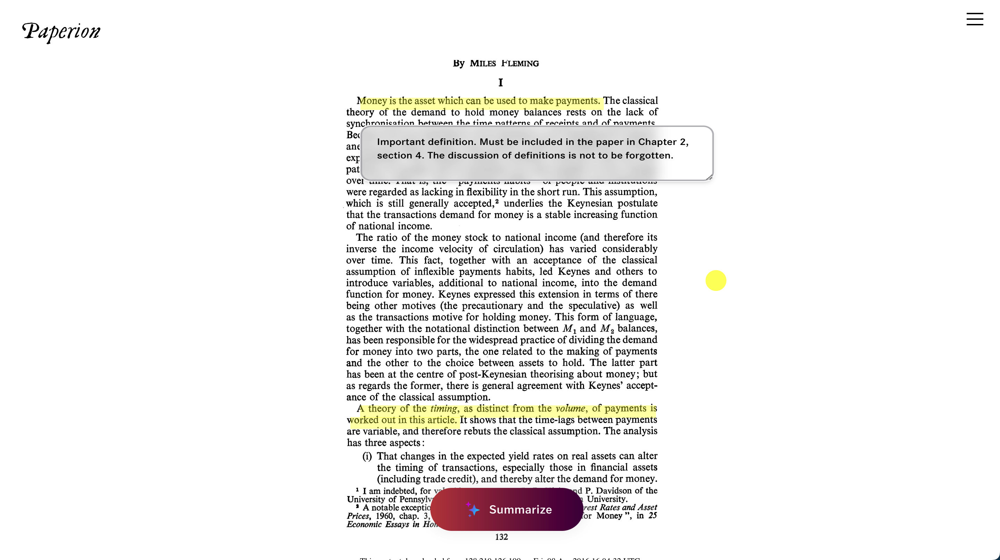
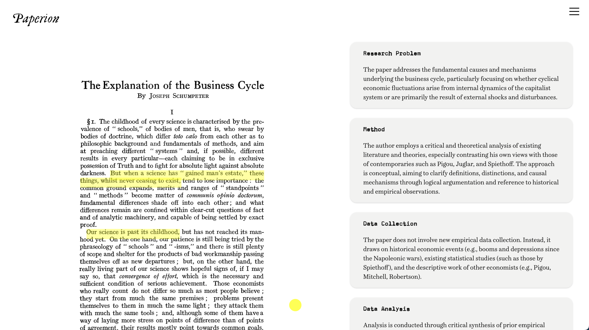
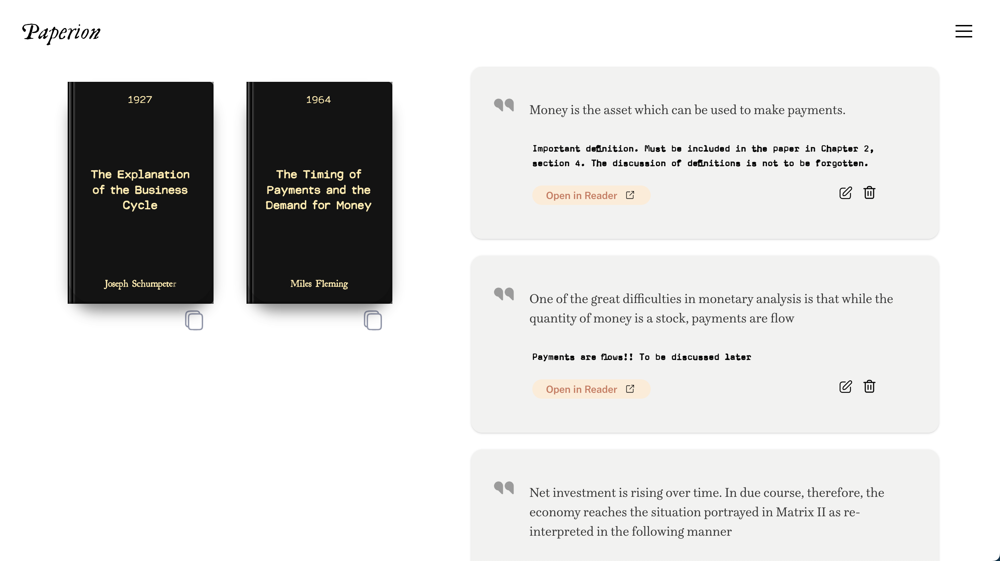
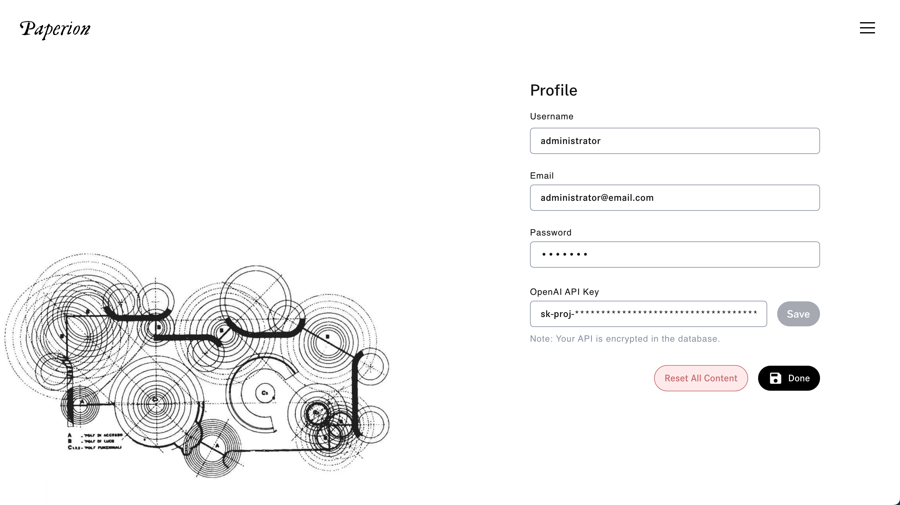


What is Paperion?
Paperion is an academic search engine. Its main goal is to find any paper ever published within seconds. Our database is built upon Elastic Search. It contains ~78 million papers metadata, including ~390,000 ingested papers, with its indexed content stored in text field.
The search engine is accompanied with various useful tools for academics.
Features ?
Paperion included a list of features as follow:
● Papers : Download ~78 million papers
● Database : ~390,000 ingested papers in Elastic Search
● Recommendations : Get similar papers based on content, or from same author, or same journal.
● Search : Search by title and/or author and/or date -- or date range -- (more details below)
● Deep Search : Search in the ingested papers content by entering a detailed description.
● Collections : Organize and save papers in collections.
● Notes : Highlight quotations from papers, and stick notes to them.
● AI Summary : Summarize papers using OpenAI key.
Search
Paperion has a powerful search feature. To find any paper, you can follow the following syntax :
[title] -- [author] -- [> | <][year][ASC | DESC]
1. If title or author is left empty, it means "All titles" or "All authors"
2. If opeartor ( > or < ) is left empty, it means equal "=" and returns exact date
3. If ASC or DESC is not precised after year, the default is ASC.
4. If year is not precised, it means "All years"
Various Search Examples :
Business Cycle -- Schumpeter -- 1930
Business Cycle -- -- > 1930 ASC
-- Schumpeter -- < 1930 DESC
Business Cycle
Database
Our database is built over the mysql dump provided by the SciHub project.
It contains ~78 million papers metadata including (Title, DOI, Authors, Publication Date, Issue ... )
We have parsed and ingested ~390,000 papers in the field (paperContent). Those papers constitute the entire papers published before 2022 in Economics.
Other indexes containing various other metadata like Publishers, Magazines.
The database is built over Docker, and is published as is with its data (50 Gb in size).
Application
The backend is built on FastAPI, and is distributed over Docker. As well as the frontend. No further configuration is necessary, as the application can be used as is.
The open source project can be downloaded here.
Important Notice
The purpose of this project is made for research purposes only, (ex; to get more information about the distribution of papers). No further usage purpose is encouraged, including distribution nor sale. We do not encourage you to use it as to bypass the paywall of other various platforms and publishers or copyright holders of the papers. Please contact researchers to get a copy of the paper, or the publisher in question.
Who created this project?
This start was founded by Youssef as a principal founding engineer: Youssef (yousbot).
Find more projects at : https://blankresearch.com
Or visit our Github : https://github.com/blankresearch
Main founding engineer:
Blank Research:
Github: